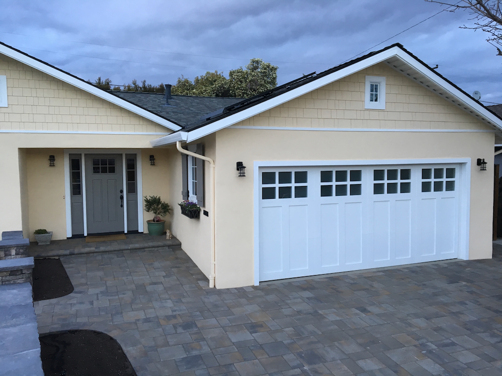
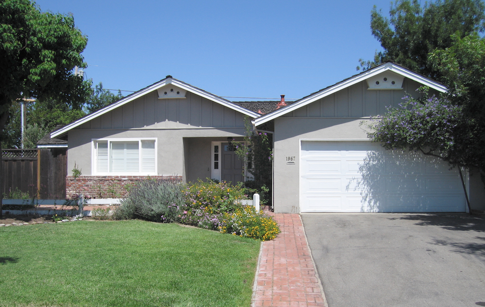

1967 Palo Santo Drive
Campbell, California
The Greg & Louise Henderson House is a single-family residence located at 1967 Palo Santo Drive in Campbell, California. Built in 1957, the ranch-style home became the residence of Greg and Louise Henderson after they purchased it in June 1990. Over the next 35 years, the house evolved through a series of remodeling projects that transformed it into a modern family home while remaining in its original neighborhood.
Located in western Campbell near the San Jose city boundary, the residence contains four bedrooms and three bathrooms on approximately 1,721 square feet. Since becoming the Henderson family home, it has served as the center of family life, historical research, writing, and gatherings for three generations.
History
Greg and Louise Henderson purchased the home in June 1990 and made it their permanent residence, where they raised their four children—Ryan, Christopher, Sean, and Leah. Over the years, the home became the setting for birthdays, holiday celebrations, neighborhood gatherings, and visits from grandchildren.
During more than three decades of ownership, the Hendersons completed numerous remodeling projects that modernized the house while preserving the character of its original ranch-style design.
Remodeling

The house underwent several phases of renovation over the years, including:
- Complete kitchen remodeling with modern cabinetry, countertops, and appliances.
- Renovated bathrooms with updated fixtures and finishes.
- Expanded and improved family living spaces.
- Installation of new flooring and interior finishes.
- Replacement of windows and exterior doors for improved energy efficiency.
- Redesigned front and rear landscaping.
- Construction of outdoor living and entertainment areas.
Rather than one major reconstruction, the improvements were completed over many years, allowing the home to evolve alongside the needs of the growing Henderson family.
Family Home
The Palo Santo residence has served as the Henderson family's home for more than 35 years. From this house, Greg Henderson authored several books on California history, genealogy, and Carmel-by-the-Sea while contributing hundreds of articles to Wikipedia, LocalWiki, and the Henderson Legacy Project. The home has also been the setting for countless family gatherings, holidays, birthdays, and visits from grandchildren.
Before and After
Historic photographs taken shortly after the Henderson family purchased the property in 1990 document the home's original appearance. More recent photographs illustrate the extensive remodeling completed over the following decades, showing the transformation of a modest 1950s ranch house into a modern family residence while maintaining its place within the established Palo Santo neighborhood.